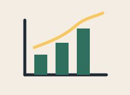

Progress
Day 0 of 100
Reach Day 10 to complete your first milestone.
100 Days of Small Habits
This page uses saved reflections from your browser to show your progress. Each saved reflection counts as one completed day.

Day 0 of 100
Reach Day 10 to complete your first milestone.
Current streak: 0 days
Total habits completed: 0